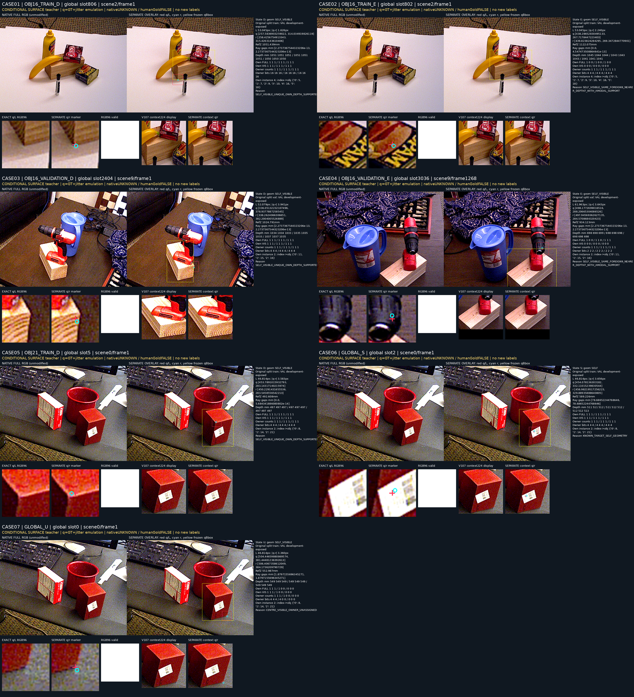

공개 재질 자료 추가는
이번 실사 외부가림 판단을 개선하지 못했습니다.
같은 q/L·RGB·평가 코호트에서 외부가림 E 정답은 WOOD C11 18/29 → C12 8/29, SQUARE 17/61 → 6/61로 줄었습니다. 보이는 D 반응은 유지되거나 조금 늘었지만, 외부가림을 놓치는 문제가 커졌습니다.
공개 source의 15개 기준 통과와 실사 전이는 별개였습니다. 이번 결과로 범용 대체나 목표 완료를 선언하지 않습니다.
같은 실사 질의에서 비교한 D / 외부 E
아래는 paired_same_query_RGB 고정 코호트입니다. 혼동행렬의 행은 인간 D / 외부 E, 열은 예측 D / binary hidden / U입니다. E 정밀도는 hidden 응답 중 실제 E 비율이며, E 재현율의 분모에는 U도 남깁니다.
WOOD — D 616, 외부 E 29
| 모델 | D / E 수 | CM: D행 / E행 | D 정밀도 | D 재현율 | E 정밀도 | E 재현율 | U율 |
|---|---|---|---|---|---|---|---|
| v61 기존 presence | 616 / 29 | [145, 471, 0] / [0, 29, 0] | 100.0% | 23.5% | 5.8% | 100.0% | 0.0% |
| 실사 legacy | 616 / 29 | [448, 65, 103] / [2, 23, 4] | 99.6% | 72.7% | 26.1% | 79.3% | 16.6% |
| C11 raw | 616 / 29 | [598, 18, 0] / [11, 18, 0] | 98.2% | 97.1% | 50.0% | 62.1% | 0.0% |
| C12 raw | 616 / 29 | [601, 15, 0] / [21, 8, 0] | 96.6% | 97.6% | 34.8% | 27.6% | 0.0% |
SQUARE — D 531, 외부 E 61
| 모델 | D / E 수 | CM: D행 / E행 | D 정밀도 | D 재현율 | E 정밀도 | E 재현율 | U율 |
|---|---|---|---|---|---|---|---|
| v61 기존 presence | 531 / 61 | [115, 416, 0] / [2, 59, 0] | 98.3% | 21.7% | 12.4% | 96.7% | 0.0% |
| 실사 legacy | 531 / 61 | [207, 254, 70] / [1, 60, 0] | 99.5% | 39.0% | 19.1% | 98.4% | 11.8% |
| C11 raw | 531 / 61 | [531, 0, 0] / [44, 17, 0] | 92.3% | 100.0% | 100.0% | 27.9% | 0.0% |
| C12 raw | 531 / 61 | [531, 0, 0] / [55, 6, 0] | 90.6% | 100.0% | 100.0% | 9.8% | 0.0% |
C12의 SQUARE E 정밀도 100%는 hidden으로 응답한 6개가 모두 E였다는 뜻입니다. 전체 E61개 중 55개는 D로 응답했으므로 높은 정밀도만으로 외부가림 판단이 좋아졌다고 말할 수 없습니다. v61·실사 legacy 저장 출력도 같은 행에 재사용했으며, 모델별 U 차이를 삭제하지 않았습니다.
D/E 코호트는 전체1,784슬롯 중 해당 인간 정답이 있는 고정 부분집합입니다. WOOD paired645행/105프레임, SQUARE592행/117프레임이며 원래 그룹명 SQUARE118과 코호트에 실제 들어온 프레임 수를 구분합니다. 전체 2×3 표 · P/R/U 원표
same-slot 결과와 초기 기하 self 경로는 별도입니다
same_slot_pipeline은 원 native 슬롯을 유지하는 비교입니다. WOOD의 D626/E30은 위 paired D616/E29와 분모가 다르므로 섞지 않습니다. 아래 초기 기하 경로는 기존 valid-only self flag를 먼저 적용한 별도 라우트입니다.
| 구분 | 모델 | D / E 수 | CM: D행 / E행 | D 정밀도 | D 재현율 | E 정밀도 | E 재현율 | U율 |
|---|---|---|---|---|---|---|---|---|
| WOOD | v61 기존 presence | 626 / 30 | [154, 472, 0] / [1, 29, 0] | 99.4% | 24.6% | 5.8% | 96.7% | 0.0% |
| WOOD | 실사 legacy | 626 / 30 | [448, 65, 113] / [2, 23, 5] | 99.6% | 71.6% | 26.1% | 76.7% | 18.0% |
| WOOD | C11 raw | 626 / 30 | [607, 19, 0] / [12, 18, 0] | 98.1% | 97.0% | 48.6% | 60.0% | 0.0% |
| WOOD | C12 raw | 626 / 30 | [610, 16, 0] / [22, 8, 0] | 96.5% | 97.4% | 33.3% | 26.7% | 0.0% |
| WOOD | C11 + 초기 기하 | 626 / 30 | [598, 28, 0] / [11, 19, 0] | 98.2% | 95.5% | 40.4% | 63.3% | 0.0% |
| WOOD | C12 + 초기 기하 | 626 / 30 | [601, 25, 0] / [21, 9, 0] | 96.6% | 96.0% | 26.5% | 30.0% | 0.0% |
| SQUARE | v61 기존 presence | 531 / 61 | [115, 416, 0] / [2, 59, 0] | 98.3% | 21.7% | 12.4% | 96.7% | 0.0% |
| SQUARE | 실사 legacy | 531 / 61 | [207, 254, 70] / [1, 60, 0] | 99.5% | 39.0% | 19.1% | 98.4% | 11.8% |
| SQUARE | C11 raw | 531 / 61 | [531, 0, 0] / [44, 17, 0] | 92.3% | 100.0% | 100.0% | 27.9% | 0.0% |
| SQUARE | C12 raw | 531 / 61 | [531, 0, 0] / [55, 6, 0] | 90.6% | 100.0% | 100.0% | 9.8% | 0.0% |
| SQUARE | C11 + 초기 기하 | 531 / 61 | [531, 0, 0] / [44, 17, 0] | 92.3% | 100.0% | 100.0% | 27.9% | 0.0% |
| SQUARE | C12 + 초기 기하 | 531 / 61 | [531, 0, 0] / [55, 6, 0] | 90.6% | 100.0% | 100.0% | 9.8% | 0.0% |
학습 head의 binary hidden은 S를 학습하거나 가림 원인을 식별한 결과가 아닙니다. 같은 슬롯의 인간 WOOD S136개에서 C12 raw hidden은 8개, 초기 기하 경로 적용 후 hidden 응답은115개입니다. 이 수치는 기하 라우트와의 조합 반응이며 learned-S 정확도가 아닙니다. SQUARE는 인간 S 정답이0개이므로 self 성능을 주장할 근거가 없습니다.
가시성 반응은 좌표 정답 검증과 다릅니다
인간이 D로 기록했고 원 q가 manual reference에서3px 이내인 부분집합에서 C12는 WOOD153/153, SQUARE223/223을 D로 응답했습니다. C11은 각각150/153,223/223이었습니다.
이는 이미 좌표가 가까운 것으로 확인된 D 부분집합에서의 가시성 반응입니다. 모델이 원 키포인트 좌표의 정답 여부를 검증하거나 모든 q의 좌표가 맞다는 인증은 아닙니다. 좌표 출력·교정·q/L 이동·PnP는 없습니다. 일반 projected-reference 오차 구간은 manual 클릭 부분집합과 별도 정의로 보존했습니다.
source는 통과했지만, material VAL100%는 새 전이 증거가 아닙니다
C11과 같은 frozen DINO 공간 descriptor1,928차원과 같은221,825파라미터 head를 사용했습니다. 기존41,984행에 material3,200행을 추가해45,184행/14,852입력 단위를 유지했습니다. 새 source TRAIN D/E32개가 배치에 추가되어 batch96이 되었고, 선택 기준도 기존8개에 material VAL D/E2개를 더한10개 코호트의 동일 가중 BCE로 바뀌었습니다.
2,000업데이트 중 source-only strict-earliest 최저 BCE는 step1200 / 0.0632563이었고, 미리 고정한 logit0과15개 source 기준을 그대로 적용했습니다.
| 자료 | CM: D행 / E행 | D 재현율 | E 재현율 | known U | matched 3개 모두 정답 |
|---|---|---|---|---|---|
| 기존 공개 TRAIN | [103, 0, 0] / [0, 77, 0] | 100.0% | 100.0% | 0.0% | 75/75 |
| 기존 공개 VAL | [147, 5, 0] / [8, 113, 0] | 96.7% | 93.4% | 0.0% | 106/119 |
| 합성 TRAIN | [750, 1, 0] / [0, 71, 0] | 99.9% | 100.0% | 0.0% | 64/64 |
| 합성 VAL | [204, 5, 0] / [0, 34, 0] | 97.6% | 100.0% | 0.0% | 31/32 |
| 추가 material TRAIN | [356, 0, 0] / [0, 202, 0] | 100.0% | 100.0% | 0.0% | 해당 없음 |
| 추가 material VAL | [102, 0, 0] / [0, 18, 0] | 100.0% | 100.0% | 0.0% | 해당 없음 |
C12 동결 뒤의 고정 C11 material 진단
같은 material 자료에 고정 C11 step1800을 별도 실행한 결과, C11도 이미 개발 VAL D102/102·E18/18을 맞혔습니다. C12의 source TRAIN 적합도 상승은 관찰되지만, material VAL100%를 처음 얻은 전이 개선으로 해석할 수 없습니다.
| 자료 | 고정 C11 D / E 정답 | C12 D / E 정답 | 의미 |
|---|---|---|---|
| TRAIN | 284/356 · 130/202 | 356/356 · 202/202 | source 적합도 상승 |
| 개발 VAL | 102/102 · 18/18 | 102/102 · 18/18 | C11도 이미 전부 정답 |
Material 전체3,200개는 D458/E220/S1,208/U1,314입니다. TRAIN D356/E202, 개발 VAL D102/E18이며, S/U는 negative로 학습하지 않았습니다. 이 VAL120개 D/E는 checkpoint 선택에 노출된 개발 자료입니다. Foam에는 E도 VAL도 없으므로 자연 foam 외부가림 성능은 검증되지 않았습니다.
자료 구성·batch·selector가 함께 바뀌었으므로 C11 대비 차이의 원인을 material 하나로 특정하지 않습니다. source gate 통과는 실사 전이나 target ownership/native corner 대응을 보장하지 않습니다.
C12 source 결과 · 15개 고정 기준 · 독립 saved source 검산 · 동결 C11 material baseline
공개 source의 실제 이미지 근거와 정답 범위
아래는 기존 정책으로 고정된7개 공개 material 사례입니다. Root가 원 contact와7개 개별 카드를 실제 확인한 기존 산출물을 연결했습니다. 이 보고서를 위해 새 실사 crop을 선택하거나 이미지를 재관찰하지 않았습니다.

이 teacher는 제공 pose/depth/owner와 ray 규칙에 근거한 조건부 물리 표면 AUX입니다. GT-jitter q는 실제 initializer native 질의가 아니며, 보이는 재질·mask 픽셀·whole-object 존재를 expected native 구조 단서의 인간 gold로 바꾸지 않습니다. q와 reference가 어긋날 수 있고, S·U는 별도 상태로 남습니다.
실행·검산 범위와 다음 공개 자료 단계
실사 C12 비교는 C11의 동일한 저장 features1,784×1,928을 재사용했고, C12 head2회(동일 반복 포함)만 실행했습니다. 새 encoder/RGB/initializer 호출은0회이며 head 상태는 그대로였습니다. 원 q/L/ID/순서와 factual U45를 보존했고 추가 U는0입니다.
독립 saved current 검산은80 metric행, 과거60행,6,304개 수치/개수 항목과 원1,784행 대응을 확인했습니다. 검산 자체가 head를 다시 forward한 것은 아닙니다. source의2000샘플 trace·21개 선택 이력·15개 기준도 saved 산출물로 별도 확인했습니다.
Head-only inference seal · Saved 평가 seal · 독립 saved current 검산
실사223은 과거 개발에 노출된 자료이며 새 독립 holdout이 아닙니다. 이번 비교로 checkpoint·문턱·arm·정규화·학습자료를 고르지 않았습니다. V112 새 추론·holdout 학습·실사 학습·PnP도 수행하지 않았습니다. 외부가림 목표는 아직 해결되지 않았습니다.
다음으로 연결할 공개 자료 작업은 결과 전에 고정된 LOCO annotation-target mask feasibility 계획입니다. 이는 target/other-owner와 기대 support를 검토할 prospective source 단계이며, SAM mask 성공·E gold·학습 승인이나 성능 개선을 뜻하지 않습니다.